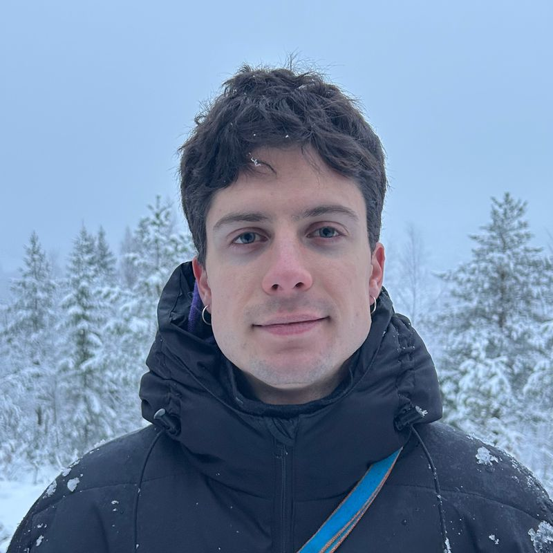

Molecular ecology · Mycology · Metabarcoding
I study the fungi that live alongside animals and plants.
My work uses DNA metabarcoding and field sampling to ask how fungal communities are shaped by their hosts, their seasons and their landscapes. Currently in Norwegian alpine tundra, previously along Andean elevational gradients.

About
I am currently a PhD fellow at Nord University. I work at the interface of microbial ecology, mycology, community ecology and molecular methods. Most of my research runs on high-throughput amplicon sequencing, ITS metabarcoding of fungi and plant ITS2 for diet reconstruction, combined with the fieldwork needed to collect samples that are actually worth sequencing.
How the data are generated matters as much as how they are analysed. Amplicon work rests on PCR, and PCR is stochastic. Two reactions from the same extract will not hand back the same community. I give every PCR replicate its own index and keep it separate all the way through the pipeline, so technical variation is measured and modelled rather than averaged away before anyone can see it.
I build my own bioinformatic pipelines end to end, from demultiplexing and primer trimming through DADA2 denoising, OTU curation and taxonomic assignment against UNITE, on to the community models that answer the ecological question. Ordination and PERMANOVA, Hill-number diversity, joint species distribution models, Bayesian hierarchical regression.
Everything I publish comes with the code that produced it.
What I work with
In the field
I am an outdoors and nature enthusiast, and I always enjoy being out in the field, from the tropics to the Arctic. The more remote, the better. Planning and designing the campaigns I run is part of that, from the Colombian páramos to the high Arctic. For the pink-footed goose study I built the entire sampling design, following the birds across their spring and autumn migrations up to Svalbard. Earlier I spent three months at a tropical field station in Trinidad, much of it catching killifish in the streams after dark.
At the bench & the terminal
Amplicon library preparation, uniquely indexed PCR replicates and sequencing, then reproducible analysis in R. DADA2, phyloseq, vegan, gllvm, Hmsc and brms, with the whole workflow version-controlled and rendered from source, so every number can be traced back to the script that produced it.
Selected work
Seasonal fungal communities in ptarmigan dung
ITS2 metabarcoding of willow ptarmigan droppings across three years of winter and summer sampling in Lierne, Norway, asking whether a seasonal diet shift reshapes the dung fungal community.
Root fungi on Andean sky islands
Root-associated fungi of Gaultheria myrsinoides across forest–páramo transitions on four isolated Colombian mountaintops, from 2,700 to 3,800 m, and whether they assemble in parallel.
Contact
The fastest way to reach me is by email. I am happy to hear about collaborations, data requests, or questions about any of the pipelines linked here.
Email · daniel.serrano@nord.no
GitHub · github.com/Ssangulo
ORCID · 0009-0008-9199-785X